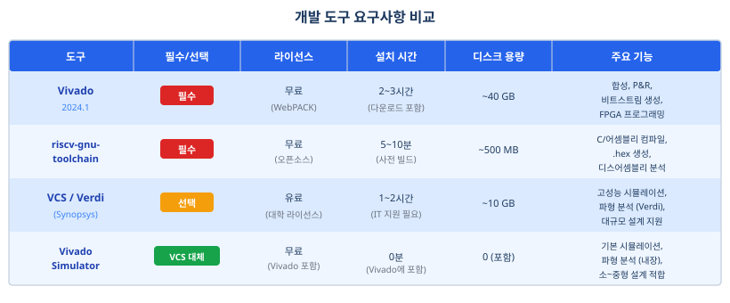
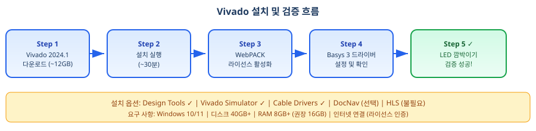
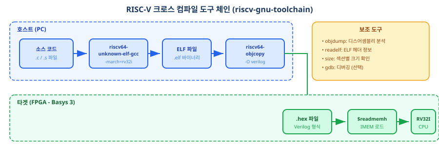

이 부록은 본 교재에서 사용하는 세 가지 핵심 개발 도구의 설치 및 검증 절차를 안내한다. 각 도구는 독립적으로 설치할 수 있으며, 반드시 순서대로 진행할 필요는 없다. 다만, 아래 표에 명시한 시작 시점까지는 해당 도구의 설치를 완료해야 본문 실습을 진행할 수 있다.
| 도구 | 필수/선택 | 시작 시점 | 설치 시간 | 주요 역할 |
|---|---|---|---|---|
| Vivado 2024.1 (또는 이후 버전) | 필수 | Ch01.2 이전 | 2~3시간 | 합성, P&R, 비트스트림, FPGA 프로그래밍 |
| riscv-gnu-toolchain | 필수 | Ch03.10 이전 | 5~10분 | C/어셈블리 컴파일, .hex 파일 생성 |
| VCS / Verdi | 선택 | Ch15 이후 | 1~2시간 | 고성능 시뮬레이션, 파형 분석 |
| Vivado Simulator | VCS 대체 | Vivado에 포함 | 0분 | 기본 시뮬레이션 (대부분의 실습에 충분) |

E.1 Vivado 2024.1 (또는 이후 버전) 설치 및 검증
왜 Vivado를 설치해야 하는가?
이 교재는 Xilinx Basys 3 FPGA 보드에서 직접 설계한 RISC-V 프로세서를 실행하는 것을 최종 목표로 한다. 하드웨어를 FPGA에 구현하려면 다음 다섯 단계를 거쳐야 한다.
- 설계 (SystemVerilog 작성) — Ch01~Ch25에서 배운다.
- 합성(Synthesis) — Vivado가 자동 처리한다.
- 배치 & 라우팅(Place & Route) — Vivado가 자동 처리한다.
- 비트스트림 생성(Bitstream Generation) — Vivado가 자동 처리한다.
- FPGA 프로그래밍 — Vivado IDE에서 버튼 한 번으로 완료한다.
즉, Vivado는 여러분이 작성한 RTL 코드를 실제 하드웨어로 변환하는 EDA(Electronic Design Automation) 통합 개발 환경이다.

Vivado 개발 환경의 이해
Vivado Design Suite는 Xilinx(현재 AMD 산하)가 개발한 FPGA 설계 도구로, 2013년부터 이전 도구인 ISE를 대체하여 표준으로 자리 잡았다. Artix-7, Spartan-7, UltraScale 등 최신 Xilinx FPGA를 모두 지원하며, 이 교재에서는 Basys 3 보드에 탑재된 Artix-7 XC7A35T를 사용한다.
설치 시 선택해야 하는 옵션은 다음과 같다.
| 설치 옵션 | 선택 | 이유 |
|---|---|---|
| Design Tools (Vivado IDE) | 필수 | 합성, P&R, 비트스트림 생성의 핵심 도구 |
| Vivado Simulator (xsim) | 권장 | VCS 라이선스가 없으면 시뮬레이션에 필수 |
| Cable Drivers | 필수 | Basys 3 USB 연결에 필요 (JTAG 프로그래밍) |
| DocNav | 선택 | 온라인 문서로 충분, 디스크 절약 가능 |
| Vivado HLS | 불필요 | 고수준 합성 도구 (이 교재 범위 밖) |
설치 환경 요구사항은 다음과 같다.
- 운영체제: Windows 10/11 또는 Linux (이 교재는 Windows 기준으로 설명)
- 디스크: 최소 40GB 자유 공간
- RAM: 최소 8GB (권장 16GB)
- 라이선스: 무료 WebPACK 라이선스 — Basys 3의 Artix-7 XC7A35T는 완전 지원
Vivado 설치 절차 (Step-by-Step)
Step 1: Vivado 다운로드 및 WebPACK 라이선스 신청
- AMD/Xilinx 공식 사이트에서 "Vivado Design Suite 2024.1" 다운로드 페이지로 이동한다.
- AMD 계정이 없으면 회원가입한다 (대학 이메일 사용 권장 — 학생 할인 혜택).
- Windows용 설치 파일을 다운로드한다 (약 12GB, 네트워크 환경에 따라 2~3시간 소요).
- 회원가입 시 WebPACK 라이선스가 자동으로 활성화된다.
Step 2: 설치 실행
- 다운로드한
Vivado_*.exe파일을 관리자 권한으로 실행한다. - "Install Vivado"를 선택한다.
- 설치 경로:
C:\Xilinx\Vivado\2024.1\(기본값 권장, 경로에 한글이나 공백이 없어야 한다). - 선택 항목:
- Design Tools: 모든 항목 선택
- Vivado Simulator: 선택
- Cable Drivers: 선택 (Basys 3 USB 연결용)
- 설치 완료까지 약 30분 소요 (시스템 성능에 따라 변동).
Step 3: Vivado 첫 실행 및 라이선스 활성화
- 바탕화면 아이콘 또는 시작 메뉴에서 "Vivado 2024.1"을 실행한다.
- 처음 실행 시 스플래시 화면이 나타난 후 메인 IDE로 진입한다 (~10초).
Help → Manage License → Load License를 클릭한다.- "ISE/Vivado Design Suite LE WebPACK" 라이선스가 활성화되어 있는지 확인한다.
- 활성화가 안 되어 있으면, 같은 메뉴에서 "Get Free ISE WebPACK License"를 선택하여 온라인 인증한다.
Step 4: Basys 3 드라이버 확인 (Windows 10/11)
- Basys 3 보드를 USB 케이블(Micro-B)로 PC에 연결한다.
Win+X → 디바이스 관리자를 연다.- "Xilinx USB Cable" 또는 "XC7 FPGA Programmer" 항목이 표시되는지 확인한다.
- 표시되지 않으면 드라이버를 수동 설치한다:
탐색기 주소창에
C:\Xilinx\Vivado\2024.1\data\xilinx_drivers\를 복사-붙여넣기하면 해당 폴더로 자동 이동한다. 그곳에서 드라이버 설치 파일을 실행한다.
검증: LED 깜박이기 프로젝트
환경 설치가 올바른지 확인하는 가장 좋은 방법은 실제로 FPGA를 프로그래밍하는 것이다. 아래 LED 깜박이기 프로젝트를 통해 Vivado의 전체 워크플로우(프로젝트 생성 → 합성 → 구현 → 비트스트림 → 프로그래밍)를 한 번에 경험할 수 있다.
프로젝트 생성
File → New Project를 선택한다.- Project name:
led_blink_test - Location:
C:\vivado_projects\ - Project type:
RTL Project - Device:
Basys3 (xc7a35tcpg236-1)또는 Boards 탭에서 Basys3 선택.
아래 SystemVerilog 코드를 led_blink.sv라는 이름으로 프로젝트에 추가한다.
// led_blink.sv - 100MHz 클록으로 LED를 약 1Hz로 깜박이는 모듈
module led_blink(
input clk, // 100 MHz (Basys 3 보드 클록)
input rst_n, // 능동 저전압 리셋 (BTN3)
output led_out // LED[0] 출력
);
logic [26:0] counter; // 27비트 카운터 (~1.34초 주기)
always_ff @(posedge clk or negedge rst_n) begin
if (!rst_n)
counter <= 27'd0;
else
counter <= counter + 1'b1;
end
// counter[26]: 약 0.67초 ON / 0.67초 OFF
assign led_out = counter[26];
endmodule
다음으로 XDC 제약 파일을 basys3.xdc라는 이름으로 추가한다.
## Basys 3 - 100 MHz 클록
set_property -dict {PACKAGE_PIN W5 IOSTANDARD LVCMOS33} [get_ports clk]
create_clock -add -name sys_clk_pin -period 10.00 -waveform {0 5} [get_ports clk]
## 능동 저전압 리셋 (Basys 3 BTN3)
set_property -dict {PACKAGE_PIN U18 IOSTANDARD LVCMOS33} [get_ports rst_n]
## LED[0] 출력
set_property -dict {PACKAGE_PIN V17 IOSTANDARD LVCMOS33} [get_ports led_out]
파일을 추가한 뒤, 다음 순서로 실행한다.
- 합성:
Flow → Run Synthesis(에러 없음 확인) - 구현:
Flow → Run Implementation(경고는 무시 가능) - 비트스트림 생성:
Flow → Generate Bitstream - FPGA 프로그래밍:
Tools → Program Device → Basys3→ 생성된led_blink.bit선택 → Program 클릭
프로그래밍이 완료되면 Basys 3 보드의 LED[0]이 약 1Hz로 깜박이는 것을 확인할 수 있다. 이것이 바로 여러분의 첫 번째 FPGA 프로그래밍 성공이다!
E.2 riscv-gnu-toolchain 설치 (크로스 컴파일러)
왜 크로스 컴파일러가 필요한가?
E.1에서 설치한 Vivado는 하드웨어(FPGA)를 만드는 도구이다. 하지만 아무리 훌륭한 CPU를 설계하더라도, 그 위에서 실행할 소프트웨어가 없으면 쓸모가 없다. 우리가 설계한 RV32I 프로세서에서 프로그램을 실행하려면, 소스 코드를 RISC-V 기계어로 변환해야 한다. 이 작업을 담당하는 것이 바로 크로스 컴파일러(Cross Compiler)이다.
전체 변환 과정은 다음과 같다.

riscv-gnu-toolchain이란?
riscv-gnu-toolchain은 GNU 프로젝트의 도구 모음을 RISC-V ISA용으로 빌드한 것이다. 주요 도구는 다음과 같다.
| 도구 | 역할 | 사용 예 |
|---|---|---|
riscv64-unknown-elf-gcc |
C/어셈블리 컴파일러 | gcc -march=rv32i sample.c -o sample.elf |
riscv64-unknown-elf-objcopy |
형식 변환 (ELF → hex) | objcopy -O verilog sample.elf sample.hex |
riscv64-unknown-elf-objdump |
디스어셈블리 분석 | objdump -d sample.elf |
riscv64-unknown-elf-gdb |
디버거 (선택) | 고급 디버깅 시 사용 |
설치 방법 (Windows 기준)
Windows 환경에서는 사전 빌드(pre-built) 바이너리를 사용하는 것이 가장 간편하다.
| 방식 | 설명 | 난이도 | 설치 시간 |
|---|---|---|---|
| 사전 빌드 바이너리 (권장) | 이미 컴파일된 바이너리 다운로드 | 낮음 | 5~10분 |
| 직접 빌드 (Linux/WSL) | 소스에서 컴파일 | 높음 | 30~60분 |
| Docker 컨테이너 | 사전 구성된 환경 | 중간 | 10분 |
Step 1: 사전 빌드 바이너리 다운로드 (GitHub 공식 릴리즈)
- GitHub의 riscv-collab/riscv-gnu-toolchain 릴리즈 페이지로 이동한다. (검색 엔진에서 "riscv-gnu-toolchain releases github"를 검색하면 바로 찾을 수 있다.)
- 최신 버전의 Windows x64 .zip 파일을 다운로드한다 (약 300~500MB).
- 예:
riscv64-unknown-elf-toolchain-14.2.0-win64.zip(버전 번호는 시기에 따라 다를 수 있다.)
Step 2: 압축 해제
C:\riscv-toolchain\폴더를 생성한다 (경로에 한글/공백 금지).- 다운로드한 .zip 파일을 해당 폴더에 압축 해제한다.
- 결과 경로 예:
C:\riscv-toolchain\bin\riscv64-unknown-elf-gcc.exe
Step 3: PATH 환경 변수 등록
제어판 → 시스템 및 보안 → 시스템 → 고급 시스템 설정 → 환경 변수를 연다.- "사용자 변수"에서
PATH를 선택하고 "편집"을 클릭한다. - "새로 만들기"를 클릭하고
C:\riscv-toolchain\bin\을 추가한다. - 확인을 눌러 저장한 뒤, 열려 있는 PowerShell/CMD 창을 모두 닫고 새로 연다.
Step 4: 설치 확인
PowerShell 또는 CMD를 열고 다음 명령을 실행한다.
# 버전 확인
riscv64-unknown-elf-gcc --version
# 출력 예:
# riscv64-unknown-elf-gcc (GCC) 14.2.0
검증: .hex 파일 생성
설치가 완료되면, 간단한 C 프로그램을 RISC-V 바이너리로 컴파일하고 .hex 파일로 변환하여 검증한다.
아래 테스트 프로그램을 sample.c로 저장한다.
// sample.c - 간단한 RISC-V C 프로그램
int main() {
volatile int value = 5; // x5 레지스터에 값 저장
while(1) { // 무한 루프 (프로세서 계속 동작)
value = value + 1;
}
return 0;
}
다음 명령으로 컴파일하고 .hex 파일을 생성한다.
# Step 1: C → ELF (RISC-V 바이너리)
riscv64-unknown-elf-gcc \
-march=rv32i \
-mabi=ilp32 \
-nostartfiles \
-nostdlib \
sample.c -o sample.elf
# Step 2: ELF → Hex (Vivado $readmemh 형식)
riscv64-unknown-elf-objcopy \
-O verilog sample.elf sample.hex
# Step 3: 생성 확인
ls -la sample.hex
# Step 4: 디스어셈블리 확인 (선택)
riscv64-unknown-elf-objdump -d sample.elf
정상적으로 생성되면 sample.hex 파일에 16진수 기계어 코드가 들어 있다.
이 파일을 Ch05에서 배우는 $readmemh 명령어로 FPGA의 명령어 메모리(IMEM)에 로드할 수 있다.
E.3 시뮬레이션 환경: VCS 또는 Vivado Simulator
시뮬레이션이 필요한 이유
하드웨어 설계는 소프트웨어와 달리, 오류가 발생해도 "디버그 출력"을 찍어볼 수 없다. 대신 시뮬레이션(Simulation)을 통해 설계한 회로가 예상대로 동작하는지 확인한다. 시뮬레이터는 클록 사이클마다 모든 신호의 값을 기록하여 파형(Waveform)으로 보여주므로, 마치 회로 내부를 "투시"하는 것처럼 동작을 분석할 수 있다.
VCS vs Vivado Simulator 비교
| 항목 | Vivado Simulator (xsim) | VCS + Verdi (Synopsys) |
|---|---|---|
| 라이선스 | 무료 (WebPACK 포함) | 유료 (대학 라이선스 필요) |
| 시뮬레이션 속도 | 보통 (소~중형 설계 적합) | 매우 빠름 (대형 설계 적합) |
| 파형 분석 | 기본 (Vivado 내장 뷰어) | 고급 (Verdi: 계층적 검색, 신호 비교) |
| 이 교재 실습 범위 | Ch01~Ch22 충분 | Ch25 이후 대규모 시뮬레이션 |
| 설치 난이도 | 낮음 (Vivado에 포함) | 높음 (IT 지원 필요) |
Vivado Simulator 사용법 (권장)
Vivado Simulator는 E.1에서 Vivado를 설치할 때 함께 설치되므로, 별도의 추가 작업이 필요 없다. 시뮬레이션을 실행하는 기본 절차는 다음과 같다.
- Vivado 프로젝트에 테스트벤치 파일을 Simulation Sources로 추가한다.
Flow → Run Simulation → Run Behavioral Simulation을 클릭한다.- 파형 창에서 관심 신호를 선택하여 분석한다.
- 시뮬레이션 시간을 조정하거나 (
run 100us), 특정 신호에 브레이크포인트를 설정할 수 있다.
아래는 E.1에서 만든 LED 깜박이기 모듈의 간단한 테스트벤치 예시이다.
`timescale 1ns / 1ps
module tb_led_blink;
logic clk;
logic rst_n;
logic led_out;
// DUT (Device Under Test) 인스턴스
led_blink dut (
.clk (clk),
.rst_n (rst_n),
.led_out (led_out)
);
// 100 MHz 클록 생성 (주기 10ns)
initial clk = 1'b0;
always #5 clk = ~clk;
// 테스트 시나리오
initial begin
rst_n = 1'b0; // 리셋 인가
#100;
rst_n = 1'b1; // 리셋 해제
#500_000; // 500us 시뮬레이션
$display("counter = %0d, led_out = %b", dut.counter, led_out);
$finish;
end
endmodule
VCS / Verdi 설치 안내 (선택사항)
VCS는 Synopsys사의 상용 시뮬레이터로, 업계 표준이지만 라이선스 비용이 매우 높다 (연간 수천만 원). 대학원 환경에서 대학 라이선스로 제공되는 경우에만 사용이 가능하다.
VCS 설치 확인 (대학원 환경)
- 소속 대학원의 "산학협력단" 또는 "컴퓨터 센터"에 Synopsys 라이선스 서버 주소를 문의한다.
- 라이선스 서버가 구성되어 있으면, Linux/WSL 환경에서
vcs -version을 실행하여 설치를 확인한다. - 간단한 테스트벤치를 컴파일한다:
vcs -sv tb_simple.sv module.sv -o simv - 시뮬레이션을 실행한다:
./simv
VCS 설치의 세부 사항은 대학마다 환경이 다르므로, IT 담당자나 선배에게 직접 문의하는 것을 권장한다. 이 교재의 모든 실습은 Vivado Simulator로 충분히 수행할 수 있으므로, VCS가 없다고 걱정하지 않아도 된다.
E.4 자주 묻는 질문 (FAQ) 및 문제 해결
개발 도구 설치 중 오류가 발생하는 것은 매우 흔한 일이다. 아래 FAQ는 수강생들이 가장 자주 겪는 6가지 문제와 해결 방법을 정리한 것이다. 여기에 없는 문제가 발생하면 E.4.7의 안내를 참조하기 바란다.
E.4.1 Vivado 설치 중 'Cannot find a supported device driver' 오류
원인: Xilinx 라이선스 서버 연결 실패 또는 방화벽 차단
해결 방법:
- 방화벽 설정에서
Vivado.exe의 아웃바운드 연결을 허용한다. Help → Manage License → Load License → Manual에서 수동 설정을 시도한다.- 그래도 안 되면 WebPACK 라이선스를 AMD 사이트에서 재신청한다.
E.4.2 Basys 3를 연결했는데 'No device found' 표시
원인: USB 드라이버 미설치 또는 USB 케이블 문제
해결 방법:
- USB 케이블을 다른 포트에 연결해 본다.
- 디바이스 관리자에서 "Xilinx USB Cable" 항목을 확인한다.
없으면
C:\Xilinx\Vivado\2024.1\data\xilinx_drivers\에서 드라이버를 수동 설치한다. - 충전 전용 USB 케이블이 아닌, 데이터 전송 지원 Micro-B 케이블을 사용한다.
E.4.3 비트스트림 생성 중 'Out of Memory' 오류
원인: RAM 부족 (복잡한 설계 + 낮은 시스템 메모리)
해결 방법:
- 다른 프로그램(브라우저, 메신저 등)을 종료하여 메모리를 확보한다.
- 임시 파일을 정리한다:
C:\Users\{사용자명}\AppData\Local\Temp\ - Vivado 합성 옵션에서
Synthesis Settings → Algorithm → "Area Reduction"을 선택한다.
E.4.4 'riscv64-unknown-elf-gcc' is not recognized
원인: PATH 환경 변수 미등록 또는 터미널 미갱신
해결 방법:
- 설치 경로를 확인한다:
C:\riscv-toolchain\bin\폴더가 존재하고riscv64-unknown-elf-gcc.exe파일이 있는가? - PATH 환경 변수에 위 경로가 추가되어 있는지 확인한다.
- PowerShell 또는 CMD를 새로 열고 다시 시도한다 (기존 창에서는 PATH 변경이 반영되지 않음).
E.4.5 컴파일은 성공했는데 .hex 파일이 생성되지 않음
원인: objcopy 명령 누락 또는 문법 오류
해결 방법:
# 올바른 명령:
riscv64-unknown-elf-objcopy -O verilog sample.elf sample.hex
# 검증:
ls -la sample.hex # 파일 존재 확인 (Linux/WSL)
dir sample.hex # 파일 존재 확인 (Windows CMD)
type sample.hex # 내용 확인 (16진수 데이터가 표시되어야 함)
E.4.6 Vivado Simulator에서 신호가 X(unknown)로 표시됨
원인: 신호가 초기화되지 않았거나 클록/리셋이 연결되지 않음
해결 방법:
- 테스트벤치에서
clk과rst_n신호가 올바르게 생성되는지 확인한다. - 시뮬레이션 시간이 너무 짧으면 신호 전파가 되지 않으므로,
run시간을 늘려본다. - 레지스터에 명시적 초기값을 지정한다:
logic [31:0] data = 32'h0000_0000;
E.4.7 설치가 잘 안 될 때 — 실패는 정상이다
막혔을 때는 다음 순서로 해결을 시도하자.
- 이 FAQ(E.4)를 다시 한 번 읽어본다.
- FAQ에 없으면 선배나 조교(TA)에게 물어본다.
- 그래도 해결되지 않으면, 조교실의 "설치 완료 PC"에서 직접 시연을 요청한다.
질문하는 것은 부끄러운 일이 아니다. 오히려, 설치 오류를 해결한 경험이 다음번 문제를 푸는 능력이 된다. 삼성, SK하이닉스, 인텔 등 대기업의 설계 엔지니어들도 신입 때는 환경 설치에서 여러 번 막혔다. 중요한 것은 포기하지 않고 한 단계씩 나아가는 것이다.
E.5 요약 및 다음 단계
이 부록에서 다룬 개발 도구의 설치 상태를 아래 표로 최종 확인하자.
| 도구 | 설치 완료? | 검증 성공? | 다음 단계 |
|---|---|---|---|
| Vivado 2024.1 (또는 이후 버전) | ☐ | ☐ LED 깜박이기 | Ch01.2부터 시작 |
| riscv-gnu-toolchain | ☐ | ☐ .hex 파일 생성 | Ch03.10부터 사용 |
| 시뮬레이터 (xsim/VCS) | ☐ | ☐ 파형 관찰 | Ch04부터 활용 |
Vivado와 riscv-gnu-toolchain의 체크리스트를 모두 통과했다면, 본 교재의 Ch01부터 학습을 시작할 수 있다.
시뮬레이터는 Ch04의 첫 번째 테스트벤치 실습에서 사용하게 되므로, 그때까지 Vivado Simulator가 정상 동작하는지 확인해 두면 좋다.
📁 전체 소스 코드
이 부록에서 사용한 코드와 스크립트의 완전한 소스 코드이다. 지금 당장 전부 이해하지 않아도 된다. 각 절 학습 후 참조용으로 활용하십시오.
TCLapp_e_vivado_tcl_script.tcl
# Vivado Tcl 자동화 스크립트: Basys 3 LED 깜박이기 프로젝트
# 사용법: vivado -mode batch -source app_e_vivado_tcl_script.tcl
set project_name "led_blink_test"
set project_dir "C:/vivado_projects/${project_name}"
# 기존 프로젝트 폴더가 있으면 삭제
if {[file exists $project_dir]} {
file delete -force $project_dir
}
create_project $project_name $project_dir -part xc7a35tcpg236-1
set_property board_part digilentinc.com:basys3:part0:1.2 [current_project]
# RTL 소스 파일 생성 및 추가
set sv_content {
module led_blink(
input clk,
input rst_n,
output led_out
);
logic [26:0] counter;
always_ff @(posedge clk or negedge rst_n) begin
if (!rst_n) counter <= 27'd0;
else counter <= counter + 1'b1;
end
assign led_out = counter[26];
endmodule
}
set sv_file "${project_dir}/led_blink.sv"
set fp [open $sv_file w]
puts $fp $sv_content
close $fp
add_files $sv_file
# XDC 제약 파일 생성 및 추가
set xdc_content {
set_property -dict {PACKAGE_PIN W5 IOSTANDARD LVCMOS33} [get_ports clk]
create_clock -add -name sys_clk -period 10.00 -waveform {0 5} [get_ports clk]
set_property -dict {PACKAGE_PIN U18 IOSTANDARD LVCMOS33} [get_ports rst_n]
set_property -dict {PACKAGE_PIN V17 IOSTANDARD LVCMOS33} [get_ports led_out]
}
set xdc_file "${project_dir}/basys3.xdc"
set fp [open $xdc_file w]
puts $fp $xdc_content
close $fp
add_files -fileset constrs_1 $xdc_file
# 합성 → 구현 → 비트스트림 생성
launch_runs synth_1 -jobs 4
wait_on_run synth_1
launch_runs impl_1 -jobs 4
wait_on_run impl_1
launch_runs impl_1 -to_step write_bitstream -jobs 4
wait_on_run impl_1
puts "비트스트림 생성 완료!"
SHapp_e_toolchain_asm_to_hex.sh
#!/bin/bash
# RISC-V 어셈블리/C → .hex 파일 변환 스크립트
# 사용법: ./app_e_toolchain_asm_to_hex.sh sample.c
TOOLCHAIN_PREFIX="riscv64-unknown-elf"
MARCH="rv32i"
MABI="ilp32"
SOURCE_FILE="$1"
BASENAME="${SOURCE_FILE%.*}"
# Step 1: C/어셈블리 → ELF
${TOOLCHAIN_PREFIX}-gcc \
-march=${MARCH} -mabi=${MABI} \
-nostartfiles -nostdlib -static \
"$SOURCE_FILE" -o "${BASENAME}.elf"
# Step 2: ELF → Hex (Verilog 형식)
${TOOLCHAIN_PREFIX}-objcopy \
-O verilog "${BASENAME}.elf" "${BASENAME}.hex"
# Step 3: 디스어셈블리 (참고용)
${TOOLCHAIN_PREFIX}-objdump -d "${BASENAME}.elf" > "${BASENAME}.dis"
echo "빌드 완료: ${BASENAME}.hex"
TBapp_e_vivado_sim_testbench.sv
`timescale 1ns / 1ps
module tb_led_blink;
logic clk;
logic rst_n;
logic led_out;
// DUT 인스턴스
led_blink dut (
.clk (clk),
.rst_n (rst_n),
.led_out (led_out)
);
// 100 MHz 클록 (주기 10ns)
initial clk = 1'b0;
always #5 clk = ~clk;
// 테스트 시나리오
initial begin
rst_n = 1'b0;
#100;
rst_n = 1'b1;
$display("[%0t ns] 리셋 해제", $time);
#500_000;
$display("[%0t ns] 시뮬레이션 종료", $time);
$display(" led_out = %b, counter = %0d", led_out, dut.counter);
if (dut.counter != 27'd0)
$display(" 테스트 통과!");
else
$display(" 테스트 실패: 클록/리셋 확인 필요");
$finish;
end
// 파형 덤프
initial begin
$dumpfile("tb_led_blink.vcd");
$dumpvars(0, tb_led_blink);
end
endmodule